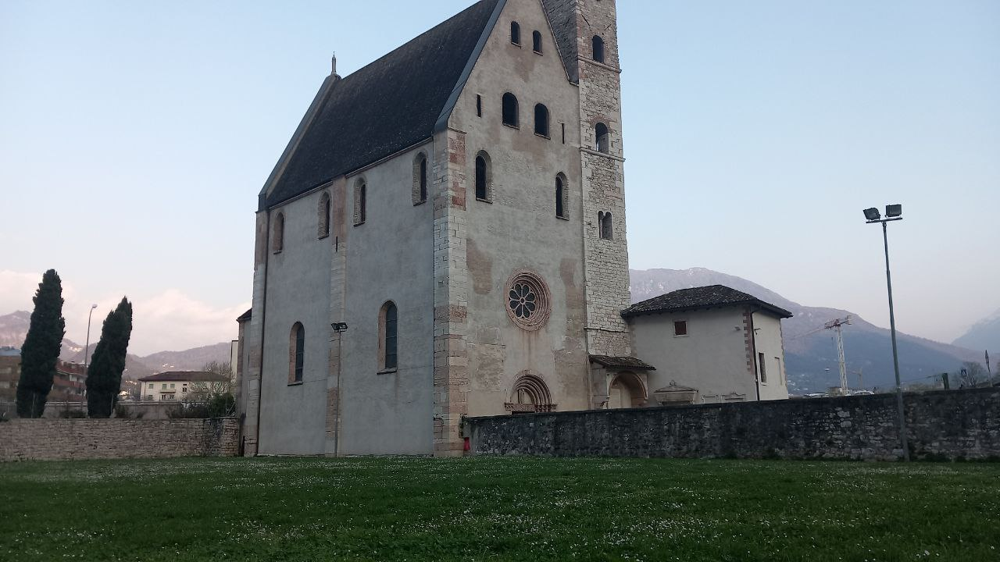
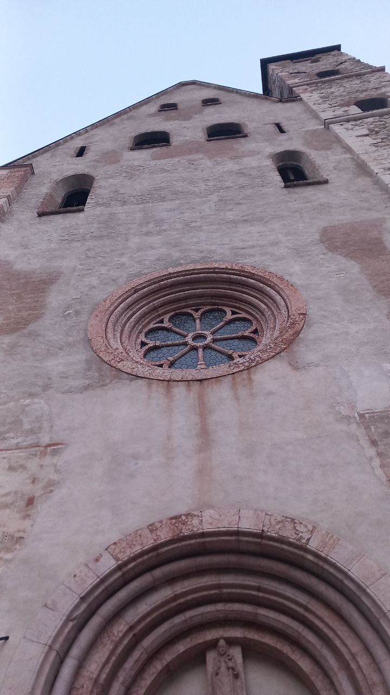
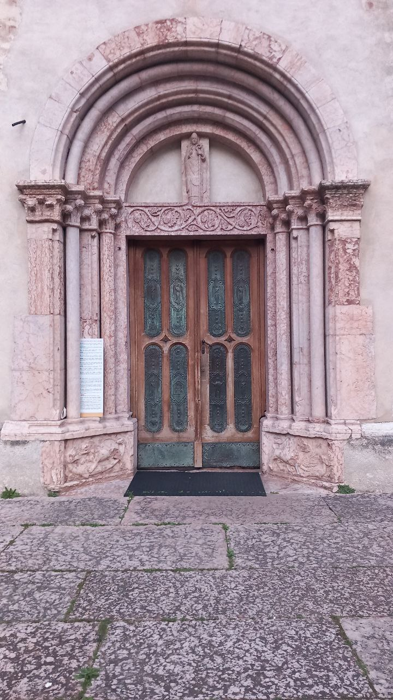
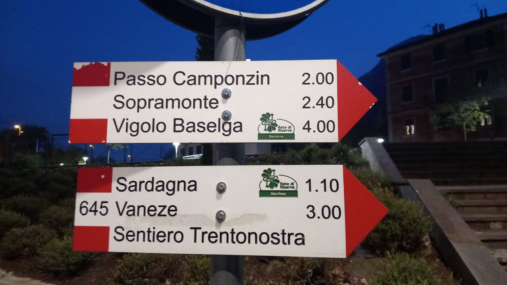

Giovanni's Diary > Reading > Surroundings > Chapters >
Sant'Apollinare Church
Walking next to the Adige river close to Trento, one cannot miss the church of Sant'Apollinare because of Its height and Its oddity. The story of this church dates back to the first paleocristiani, in the 6th century, and It evolved and reshaped over the centuries. Its surroundings have changed too, perhaps more violently, leaving this place as a monument to a past time.
The church is situated in a busy road just west to the city, on the other side of the river. Cars and busses pass through here in waves, briefly glimpsing the back of the church. Instead, if you approach It from west or north-west, you would appreciate Its front face and dimensions. The church has a rectangular floor with the shorter edge at the front and back. It develops in height by at least double Its width, with an even higher bell tower. The exterior is plain and simple, with the remains of paint suggesting some lost pictures decorating the front. Up the main door there is a rosone, common to many churches, and above It there are 8 windows placed symmetrically on the left and on the right. The tower is attached in the corner between the front and the southern edge.

Figure 1: View of the church
As you get closer to the church, you feel smaller and tinier, as if the balance of importance and power slowly changes, making you humble just before reaching the main entrance.

Figure 2: Looking up
The door looks as old as the church, made with wood and metal plates with figures places between the gaps. There is a description of the changes to the church throughout history right next to it. Briefly, It was created round the 10-11 century where different groups would stay here throughout the years. The bell tower still comes from this period. Then, in 1250-1300 It was demolished and the current church was built. Some decorations on the outside were added but were lost in time, some inner paintings have been restored, as well as the floor which was raised by 1.7 meters because of floods. The church is still used for christian ceremonies to this day, and It makes Its own parrocchia, together with other churches nearby.

Figure 3: Front entrance
Beneath the church lies a grass area, now flourishing with daisies, and a park with various toys and benches and a board with upcoming events. We are in the area of Piedicastello, one of the oldest places in Trento. Next to the park is a museum called "Le Gallerie" where two old galleries are now used to display historical testimonies and other events. The content often changes a couple of times each year so It is worth checking this place from time to time, the show is very different from a conventional museum as they use sound and light effects.
Watching over us is the mount of Bondone and the Doss Trento, which can both be reached from here. You can reach Sardagna in about 40 minutes but Its not an interesting walk, from there you can go higher towards Vaneze or go west where there is a really nice walk towards Vigolo Baselga. It is about 3-4 hours between agriculture land and towns in the valley, It is simpler if you go from Vigolo Baselga to Trento since It is mostly downhill and there is a public bus to Baselga. This path is part of a bigger one that goes from Madonna di Campiglio to Trento and lasts something like 5 days.

Figure 4: Walks starting from the church
Travel: Surroundings, Index